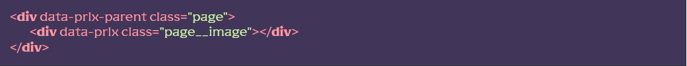

Підключення модуля
[JS] У файлі js/app.js розкоментовуємо рядок import ‘./libs/parallax.js’
[HTML] Будуємо HTML-структуру з додаванням атрибутів data-prlx-parent для батьківського елементу та data-prlx для елементів для яких хочемо застосувати ефект.
